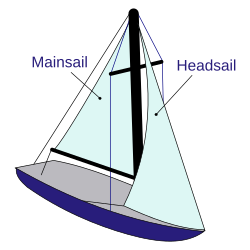

Boat Sailing
A sailboat or sailing boat is a boat propelled partly or entirely by sails and is smaller than a sailing ship. Distinctions in what constitutes a sailing boat and ship vary by region and maritime culture.


A sailboat or sailing boat is a boat propelled partly or entirely by sails and is smaller than a sailing ship. Distinctions in what constitutes a sailing boat and ship vary by region and maritime culture.